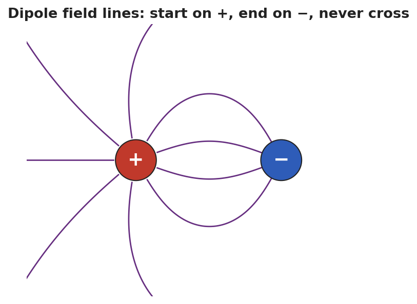
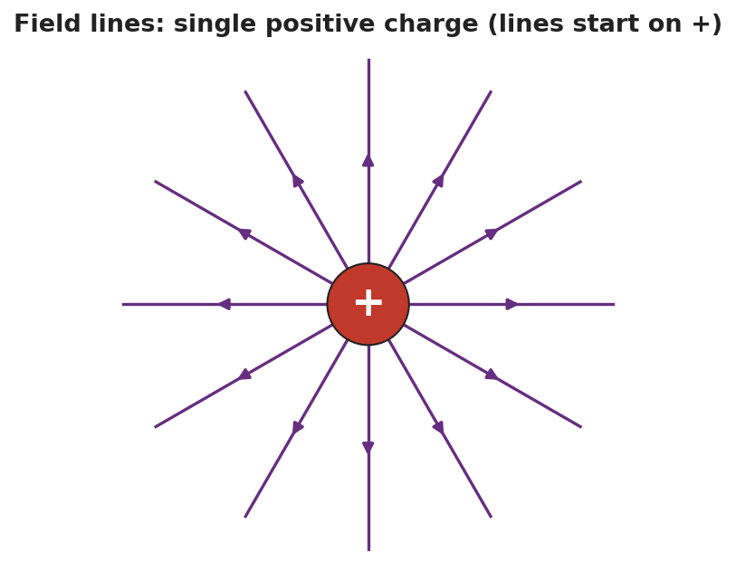
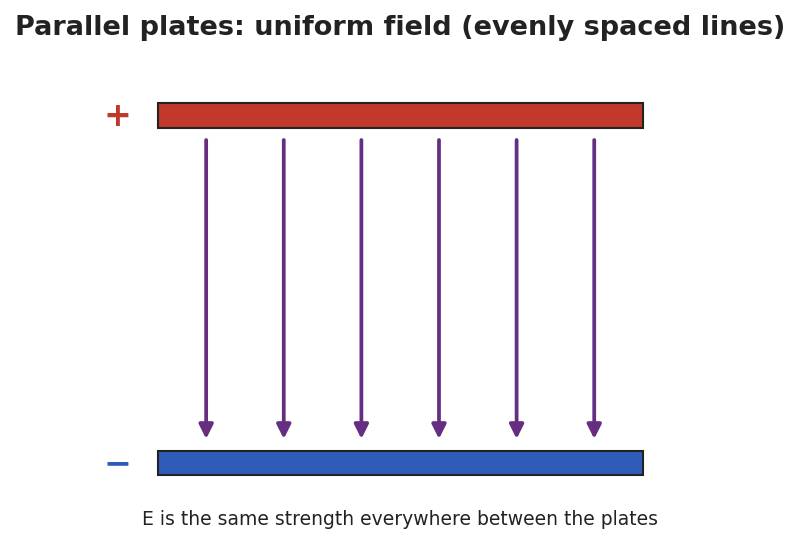

Unit: Electrostatics — Lesson 06: Electric Field Lines
Phenomenon
Your teacher switches on two electrodes in a dish of semolina grains in oil. The grains snap into curved chains running between the electrodes — an invisible field suddenly made visible.

Driving Question
What rules do field lines follow, and how do they show us the direction and strength of an electric field?
Notice & Wonder
Watch the grains snap into chains between the electrodes. Write what you notice and what you wonder.
Initial Model
Draw a single + charge and sketch how you think the field lines leave it. Then draw a + and a − near each other and sketch the lines between them.
Investigate
Pick a configuration and the field-line pattern is drawn for you. Notice: lines start on + and end on −, they never cross, and where they are closer together the field is stronger.
Pattern: Single positive — lines point straight out, away from the charge.


Make It Make Sense
- List the four rules for drawing electric field lines.
- Two diagrams show field lines: in Diagram A the lines are close together; in Diagram B they are far apart. Where is the field stronger, and how do you know?
- How is the field between parallel plates different from the field around a single charge?
Stuck? Sentence frame
"Field lines start on the ___ charge and end on the ___ charge; where they are ___ (close / far), the field is ___ (strong / weak)."
Key Vocabulary (max 3)
- field line — a line drawn to represent an electric field: it starts on a positive charge, ends on a negative charge, never crosses another, and shows the field's strength by how closely spaced it is
- dipole — a pair of equal and opposite charges set close together; its field lines curve from the + charge to the − charge
- uniform field — a field of constant strength and direction, shown by straight, evenly spaced field lines (as between parallel plates)
Revise Your Model
Return to your dipole sketch. Re-draw it to obey all four rules: lines start on +, end on −, don't cross, and crowd where the field is strong. Label where the field is strongest.
Return to the Phenomenon
Why did the semolina grains line up exactly along the field lines? Answer in one sentence: each grain became polarized and lined up end-to-end along the field's direction, tracing the lines we'd draw.
Exit Ticket + Closing Reflection
- (a) State two rules for drawing electric field lines.
(b) Two diagrams show field lines: in Diagram A the lines are close together; in Diagram B they are spread far apart. Where is the field stronger, and how do you know?
(c) Sketch the field lines for a single negative charge. Which way do the arrows point, and where do they end? - Reflection: Which Hochman sentence (the appositive or a Because/But/So) best captured a rule for you today?